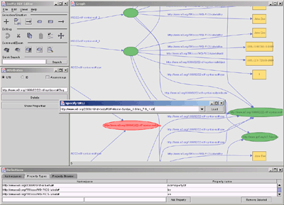
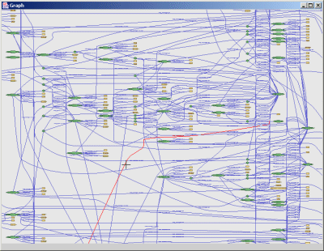

Click on images to enlarge.
Import both local and remote files (IsaViz running on Windows)
Browse properties associated with a resource (IsaViz running on Linux)

Export to RDF/XML, N-Triples, SVG and PNG

High altitude view of a graph
Close up on a region of the same graph